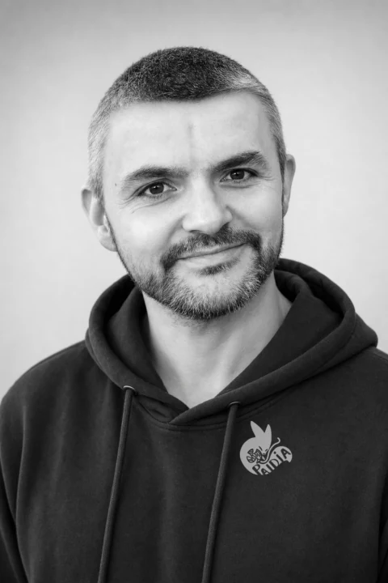

Teachers who build.
Fifteen years of university teaching, then the UK Government's first public AI service. We build AI that goes into production, and we teach your people to run it without us.
Dr David Gérouville-Farrell
AI strategy, architecture and coaching. London.
I spent fifteen years in academia as a university lecturer in computer science, with thirty published papers and a background that runs from web and game development through to service design, delivery and product management. AI was my hobby long before ChatGPT: I spent my spare time training computer vision models and fine-tuning image models. When ChatGPT arrived I could not stop thinking about the change about to hit the world, so I built Paidia to help bring AI to the public and private sector.
I had the privilege of designing and building the UK Government's first public-facing AI service, for the FCDO. Since then I have led Paidia's work with clients ranging from national institutions like the NHS and Great Ormond Street Hospital Charity to SMEs and large enterprises. I work across the whole stack, from boardroom strategy to hands-on architecture to one-to-one coaching, and I co-host the London AI practitioners meetup.
“I spent fifteen years teaching computer science. I still think the job is to make people capable, not dependent.”
Who else you will work with
Leads delivery on our public-sector engagements, most recently the AI governance frameworks for a London borough. Years across central and local government, and a research background in human behaviour, which is what turns AI policy into something teams can use.
Product manager with fifteen years running large technology programmes in government and industry. Gus turns a board's AI ambition into a plan a delivery team can actually run.

Ross AndersonAI engineeringEngineer. Builds the AI systems we hand over: search over your documents, multi-step automations, the web front end and the database behind them.
Recognition
For the FCDO service, built with Caution Your Blast.
Tell us what you are trying to do.
We will say whether we can help, and how.